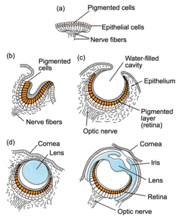

The Human Sensorium: Interplay and Closure
What piece of work is a man! how noble in reason!
how infinite in faculty! in form and moving how
express and admirable! in action how like an angel!
in apprehension how like a god! the beauty of the
world! —Hamlet
Four of man's senses, hearing, sight, taste and smell, have evolved from the fifth, the skin or haptic organ, an faculty of such delicacy it can detect the thickness of a single page when thumbing through a magazine. It is to this tactile organ and its interneural connections that we owe the interplay of the senses. Creationists cite the human eye as an example 'irreducible complexity,' as proof for intelligent design and hence the existence of God. But it is clear from the illustration below that the human eye evolved from the pigmented and epithelial cells of the skin, and that the optic nerve evolved from subcutaneous nerve fibers.
What is true of sight is also true of the other senses, like hearing. In The Gutenberg Galaxy, McLuhan cites George Von Bekesy's article on "The Similarities between Hearing and Skin Sensations," as proof that no sense functions in isolation or resists modification by the operation of the other senses. Indeed we learn from an abstract of Bekesy's article that:
The number of similarities between hearing and the sensation of vibration is great. Both are stimulated by traveling waves. A close similarity between loudness and vibration magnitude holds for sensitive areas like the finger tips; for less sensitive areas, sensation magnitude increases faster, once above threshold. The skin responds to changes far more slowly than the ear. Other areas of similarity are sensation of apparent volume, localization, inhibition, summation, and funneling. It is as though there is a continuum from the less sensitive skin areas, through the most sensitive, to the cochlea, the critical factors being the number of nerve endings and the interneural connections available. (From Psyc Abstracts, PsycINFO Database Record (c) 2010 APA)
 |
Evolution of the Human Eye |
Interplay
Most of us recognize the interplay of the senses. When we listen to music, we see the music in our mind's eye, and it would not be too much to say we feel its atmospherics on and under our skin, i.e. these other senses participate in the auditory experience. For example, when we speak of the silver tones of a lyric tenor, this is not metaphor; it is exactly how we experience the sound of the tenor voice, i.e. visually, through the interplay of sight and sound. It is important to understand that these visual properties are not associations of the audio signal, but actually constitute the acoustic effect, i.e. without these visual cues we cannot hear, or be conscious of, the audio signal. We can only know sound via its interplay with the other senses.
Likewise, when we refer to brass instruments as being brilliant or the bassoon as being somber, we are speaking in visual terms. This synesthesia extends to the tactile and olfactory senses. This is not to say there are not also the usual mnemonic associations, but these are not constitutive of the actual stimulus itself. No sooner do we see the texture of some object (slick, smooth, rounded, grainy, gritty, rough, abrasive, sticky, etc.) than we sense its tactility. The discomfort we feel when we hear fingernails pulled across a chalk board is a tactile shock: our whole body winces and writhes as if we had bitten into a sour apple.
'Synesthesia' first entered the language as a neurological term to describe a condition in which the stimulation of one sense or neurological pathway prompts an involuntary response from another sense, as for example hearing sounds in response to visual motion. One subject claimed to hear various notes of the chromatic scale in color, e.g. C# as navy blue and metallic. This medical pathology is closely related to the way the human mind senses itself. That is to say, the senses are defined in terms of one another, and the interplay between them is what we call consciousness.
But when we extend one of the senses, e.g. sight, with a new technology like writing, this extended sense achieves an autonomy independent of the other senses. Set apart from them, it becomes a force unto itself, a kind of renegade self, . The equilibrium of the senses is lost and there is a fixation on the dominant sense resulting in something called closure. I.e. the mind no longer experiences the richness and diversity of a mosaic sensorium. Properly speaking, since writing is extension of oral speech, and oral speech is itself an extension of thought, writing is also an extension of thought. In the case of literacy, the visual emphasis of the phonetic alphabet marginalizes the other senses, giving us, among other things, the hyper-rational or 'split' man.' ("Euclidean perceptions," McLuhan tells us, "are constituted by the phonetic alphabet.") In The Gutenberg Galaxy McLuhan mentions the 'odor of Seneca,' who abandoned the existential immediacy of political speech in favor of classroom oration. And just as a fish does not understand water (because it has no counter-environment with which to compare it) literate man does not understand the element he inhabits: he thinks reading and writing (and tyranny of logical cause and effect) are universals or the 'norm.'
"The interplay among our senses is perpetual save in conditions of anesthesia. But any sense when stepped up to high intensity can act as an anesthetic for the other senses." GG, p.34
This alteration of the sensorium is not a conscious act. It is more like Freudian repression, which is a passive avoidance of certain memories. The other senses are still potentially active, but an absortion in the heightened sense excludes them from consciousness, or anesthetizes them.
However a question arises about McLuhan's idea of a shifting sensorium caused by a bias imposed by the phonetic alphabet (as though the mere act of abstracting sound from meaning generates three-dimensional space). If writing is an extension of oral speech, and oral speech is itself an extension of thought, then writing must also be an extension of thought; hence the Euclidean world resulting from the exposure to print technology may have nothing directly to do with the phonetic alphabet, but may be directly due to the value system and new model of perception engendered by literacy. Did man's scientific outlook arise from learning the alphabet per se, or was it the product of simple literacy? Did our view of a mechanistic universe originate on the micro level with the alphabet, or the macro level with the dissemination of knowledge by the printing press..
Closure
A hint of the emphasis and closure engendered by the domination of one sense can be found in Milman Parry's study of the Yugaslov epics:
Convinced that the poems of Homer were oral compositions, Parry "set himself the task of proving incontrovertibly if it were possible, the oral character of the poems, and to that end he turned to the study of the Yugoslav epics." His study of these modern epics was, he explained, "to fix with exactness the form of oral story poetry. . . . Its method was to observe singers working in a thriving tradition of unlettered song and see how form of their songs hangs upon their having to learn and practice their art without reading and writing." (The Gutenberg Galaxy, p.9)
The premise of Parry's study was deceptively simple: to show that the medium of poetry (speech or writing) would produce a distinct alteration of the poetry; that the forms of oral and written poetry would reveal the extent to which literacy wrought a sea change on epic poetry, i.e.on what had been an oral tradition. "The enterprise," continues McLuhan, "which Milman Parry undertook with reference to the contrasted forms of oral and written poetry is here extended to the forms of thought and organization of experience in society and politics."
'the stripping of the senses and the interruption of their interplay in tactile synesthesia' GG, p.26
Closure occurs when one of the senses dominates and disrupts the others, as when vision eclipses the other senses when extended by external technologies like the alphabet and printing. Closure is an attempt at homeostasis. According to psychologists, one of the most disruptive human experiences, aside from the loss of a spouse, is moving to another house. We flail for months: groping for light switches that are not there, trying to locate the bathroom at night; but gradually memory takes over and we don't have to think about these things. Something like this occurs when one of our senses develop an outsized importance. Our sensorium strives to restore its former equilibrium, but this equilibrium is achieved at the cost of a disproportion emphasis on the extended sense. The other senses atrophy and die on the vine, ending interplay. The hyperactive sense dominates and because it is all we behold, it becomes the standard or a norm.
According to McLuhan William Blake was one of the first to notice this phenomena:
"William Blake can provide the explanation and justification of this procedure. Jerusalem, like so much of his other poetry, is concerned with the changing patterns of human perception.
If Perceptive organs vary, Objects of Perception seem to vary:
If the Perceptive Organs close, their Objects seem to close also.
"Determined as he was to explain the causes and effects of psychic change, both personal and social, he arrived long ago at the theme of The Gutenberg Galaxy:
The Seven Nations fled before him: they became what they beheld.
"Blake makes quite explicit that when sense ratios change, men change. Sense ratios change when any one sense or bodily or mental function is externalized in technological form:
The Spectre is the Reasoning Power in Man, & when separated
From Imagination and closing itself as in steel in a Ratio
Of the Things of Memory, It thence frames Laws & Moralities
To destroy Imagination, the Divine Body, by Martyrdoms & Wars.
"Imagination is that ratio among the perceptions and faculties which exists when they are not embedded or outered in material technologies. When so outered, each sense and faculty becomes a closed system. Prior to such outering there is entire interplay among experiences. This interplay or synesthesia is a kind of tactility such as Blake sought in the bounding line of sculptural form and in engraving.
"When the perverse ingenuity of man has outered some part of his being in material technology, his entire sense ratio is altered. He is then compelled to behold this fragment of himself "closing itself as in steel." In beholding this new thing, man is compelled to become it. Such was the origin of lineal, fragmented analysis with its remarseless power of homogenization:
The Reasoning Spectre
Stands between the Vegetative man & his Immortal Imagination.
(The Gutenberg Galaxy, p.314-5)